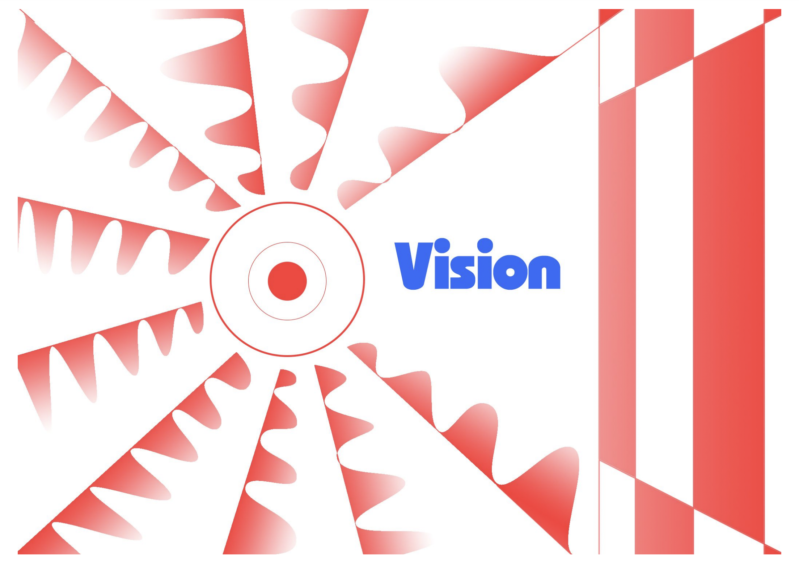

Cognitive Sciences
Emotion and Visual Perception
What does it mean for semantic knowledge to affect visual perceptions? By posing this question, what is the extent to which the knowledge we have about an object’s properties can influence the process in which we visually perceive such objects at the basal level? Is it even possible? This experiment suggests that this is the case by conditioning participants to fear unrecognizable object-entities (puppy/muffin) and then observing the correlation between the response time under continuous flash suppression
view documentHow vision works - Infographic

view document